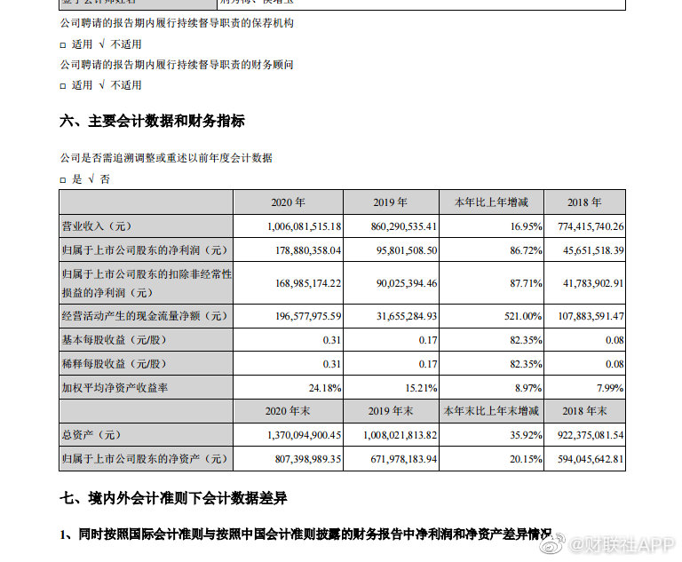

年报开始披露了。一月份3家，2月份52家，3月份1105家，4月底披露完毕。大戏2-3个月以后才能开始，有点期待呢。@财联社APP:财联社1月20日讯，两市首份年报出炉，沃华医药公告，2020年全年实现净利润1.79亿元，同比增长86.72%。拟10派2.6元。 
这件事让我特别生气的是，我感到自己的智商不够用了。虽然没有仔细梳理，但打开微博就是这件事，所以陆陆续续也吃了几口瓜。然而直到现在，我都不知道这两人到底是怎么回事。谁欠谁的钱，公司是怎么回事，做什么的，官司是个什么官司，是怎么个交往过程，dy过程又是怎么回事。所有人都在吃瓜，弄清楚的我估计没几个。整个事件就像小爽的一直以来的文字一样，那么天马行空，那么后现代，让人弄不清楚。智商不够的感觉就好气。